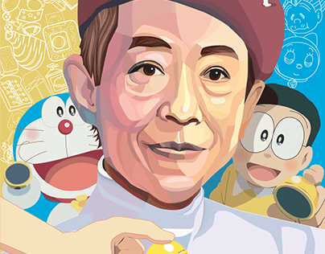
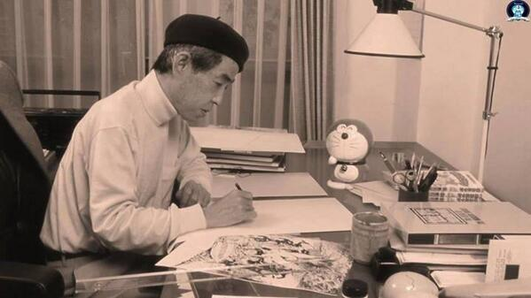
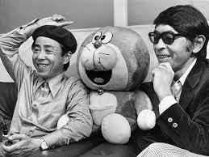
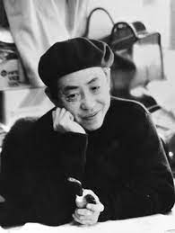

About
Fujiko F. Fujio is the author of Doraemon, a widely known and widely loved manga that has garnered fans from all over the world. Via an exhibition of his works at the Kawasaki City Fujiko F.
Biography
Hiroshi Fujimoto and Motoo Abiko were both from Toyama Prefecture. Fujimoto was born on December 1, 1933, and Abiko on March 10, 1934. Abiko transferred to Fujimoto's elementary school in Takaoka City and happened to see Fujimoto drawing in a notebook. The two became lifelong friends, and during the early years of their friendship kept their illustrations hidden from friends and classmates out of embarrassment.
In high school they made their publishing debut, Tenshi no Tama-chan being adopted for serialization by Mainichi Shogakusei Shimbun in 1951. That same year they paid a visit to Tezuka's residence in Takarazuka, Hyōgo and showed him illustrations for their work titled Ben Hur. Tezuka complimented the two, some years later commenting that he knew then they were going to be major figures in the manga industry. Abiko and Fujimoto treasured the meeting with the respected Tezuka, and kept the Ben Hur illustrations for their entire lives. It was at this time they decided to make their partnership permanent, initially adopting the name Tezuka Fujio out of respect, later changing this to Azhizuka Fujio when they perceived adoption of the Tezuka name as too close to that of their idol.
Because both Fujimoto and Abiko were eldest sons respectively, they decided to take company jobs after graduating from high school in 1952. Fujimoto found employment with a confectionery company, and Abiko began working for the Toyama Newspaper Company. However, Fujimoto suffered a workplace injury when an arm was caught in machinery, and he quit within a matter of days. Fujimoto then dedicated his time to submitting work to periodicals, with Abiko assisting him on the weekends. Their first serial as Ashizuka Fujio was terminated in a few episodes, followed by success with the post-apocalyptic science fiction series Utopia: The Last World War (UTOPIA—最後の世界大戦, UTOPIA: Saigo no Sekai Taisen).
In 1963 Fujimoto and Abiko established Studio Zero with Shin'ichi Suzuki, Shotaro Ishinomori, Jirō Tsunoda and Kiyoichi Tsunoda. Later Fujio Akatsuka joined, and at its peak the studio employed about 80 people. The studio produced several animated films such as Astro Boy. For Fujimoto and Abiko these were some of their most productive years, resulting in series such as Obake no Q-Tarō which eventually were made into anime series on television. It was at this time that Abiko started making manga for a more mature audience, with titles such as Teresa Tang and Kuroi Salesman. Abiko got married in 1966 at the age of 32. Fujimoto concentrated on titles for children, with a particular interest in science fiction.
Doraemon was created in 1969 and immediately surged in popularity with children in Japan. CoroCoro Comic released its first issue in 1977 to showcase the works of Fujiko Fujio. With syndication of Doraemon on TV Asahi in 1979, a surge of popularity saw up to a dozen collaborative and solo works by Fujimoto and Abiko picked up for publication and syndication throughout the 1980s. Doraemon is the only work by the duo to ever get an official release in English-speaking countries, most notably the United States. But English dubs of work such as Perman and Ninja Hattori-kun aired in Asia.
In 1987, citing creative differences, Fujimoto and Abiko ended their long partnership to concentrate on solo projects. From now on, Abiko would work at Fujiko Studio and Fujimoto in Fujiko F. Fujio .
Abiko adopted the pen name Fujiko A. Fujio, while his former partner wrote under the pseudonym Fujiko F. Fujio.Abiko concentrated on work incorporating more black humor while Fujimoto focused on works for tweens. According to Abiko,[citation needed] the cause for the dissolution of the partnership was due to Fujimoto discovering he had liver cancer and heart disease in 1986, and the desire of both Fujimoto and Abiko to settle issues of copyright and finances before Fujimoto's death in 1996.A documentary was aired on TV Asahi on February 19, 2006, chronicling the life and times of Fujiko Fujio.
A Fujiko F. Fujio museum opened in Kawasaki, Kanagawa on September 3, 2011, which features a reproduction of Fujio's studio and a display of their artwork.Fujimoto died from liver failure in Shinjuku on September 23, 1996. Abiko died at his home in Kawasaki on April 7, 2022.
Career
Fujiko Fujio (藤子 不二雄) was a manga writing duo formed by Japanese manga artists Hiroshi Fujimoto (藤本 弘, Fujimoto Hiroshi, December 1, 1933 - September 23, 1996) and Motoo Abiko (安孫子 素雄, Abiko Motoo, March 10, 1934 – April 7, 2022). They formed their partnership in 1951, and used the Fujiko Fujio name from 1954 until dissolution of the partnership in 1987, upon Fujimoto's illness. The pair was best known for their popular comedies, including Obake no Q-Tarō, Ninja Hattori-kun, Kaibutsu-kun, and Doraemon, the main character of which is officially recognized as a cultural icon of modern Japan.
Awards
-

- 1963 -Shogakukan Manga Award for Old Song and Tebukuro Tecchan
- 1981 -Kawasaki City's Cultural Prize (川崎市文化賞)
- 1982 -Shogakukan Manga Award for children's manga
- 1989 - Film Special Meritorious Prize
- 1989 - Golden Gloss Prize
- 1997 - The first Tezuka Osamu Cultural Prize Grand Prize